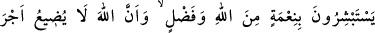
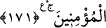

“korku olmadığını, onların da üzüntü duymayacaklarını müjdelerler.”
Âyetin mânası şöyledir: Şehîdler, geride bıraktıkları kardeşlerinin hâli ile ilgili
olarak kendilerine açıklanıp müjdelenen şeylerden dolayı sevinç duyarlar. Şehîdlerin
sevinç duymasına sebep olan haller: Kardeşleri ölünce ya da öldürülünce korkulacak
hiçbir durumun, başlarına gelme korkusu ve istedikleri hiçbir şeyi elde edememe
üzüntüsü duymadan, ebedî hayatla feyzlenir olmalarıdır. Korku, insanın başına ileride
bir kötülük geleceği beklentisinden kaynaklanır. Hüzün ise, geçmişte var olan birtakım
menfaatlerin elden gitmesi yüzünden yaşanır. İşte Allah Teâlâ, kıyâmetin dehşetengiz
hallerinden dolayı ilerde hiçbir korkuya kapılmayacaklarını, ayrıca ellerinden
kaçırdıkları dünyevî nîmet ve lezzetler yüzünden kesinlikle üzüntü duymayacaklarını
beyân etmiş oluyor.
171. Onlar, Allah’dan gelen nîmet ve keremin; Allah’ın, mü’minlerin ecrini zâyi
etmeyeceği müjdesinin sevinci içindedirler.
“İyi davrananlara daima daha iyisi ve bir fazlası vardır.” (Yûnus, 10/26) âyet-i
celîlesinde belirtildiği gibi sevinirler. Bu âyette şehidlerin sevinecek olmalarını bir
kere daha zikrediyor ki, bu sevincin, sadece korku ve hüzünden âzâde olmaktan
kaynaklanmayıp, bunların yanısıra, herhangi bir şeyle mukayesesi dahî imkânsız olan
büyük
nimetlerden
-ki
bunlar,
amellerine
karşılık
verilecek
sevaplardır-
kaynaklanacağını belirtmiş olsun ve Allah’ın, şehid olsun olmasın, hiçbir mü’minin
ecrini zâyi etmeyecek oluşuna sevinsinler.
İmam Fahreddin Râzî der ki: “Âyet-i kerîme şehidlerin, kardeşlerinin mutluluğu
müjdesine sevinmelerinin, kendi mutluluklarına olan müjdeye duyacakları sevinçten
olduğunu göstermektedir. Zira, önce zikredilen sevinç, kardeşlerinin hâlinden
duydukları sevinçtir. Bu, insanın kardeşlerinin ve akraba-i taallukatının iyiliğinden
dolayı duyduğu sevincin, kendi durumunun iyi oluşundan ve kendisi için duyduğu
sevinçten daha fazla olması gerektiğine dâir Allah’ın bir tenbîhidir.”
Âyet-i kerîme, bu öldürülenlerin her ne kadar ruhları bedenlerinden ayrılsa da, hâl-i
hazırda diri olduklarına delâlet etmektedir. Ölülerin el’ân diri olduklarına hükmedenler;
diri olanın, ölünün ruhu mu yoksa bedeni mi olduğu husûsunda farklı görüştedirler.
Meselenin iyice vuzûha kavuşması için burada şöyle bir mukaddime yapmak lâzımdır:
“İnsan dediğimiz varlık, şu görünen bünyenin tamamından ibâret olmayıp bilakis
göründüğünden farklı bir mahiyettedir. Çünkü bu bünyenin cüzleri yağ toplayıp eritmek
ve küçükken büyümek gibi hallerle daimi bir değişim, çözülüş ve erime süreci
içerisindedir. Özel anlamda insan denilen varlık ise ömrünün başından sonuna kadar